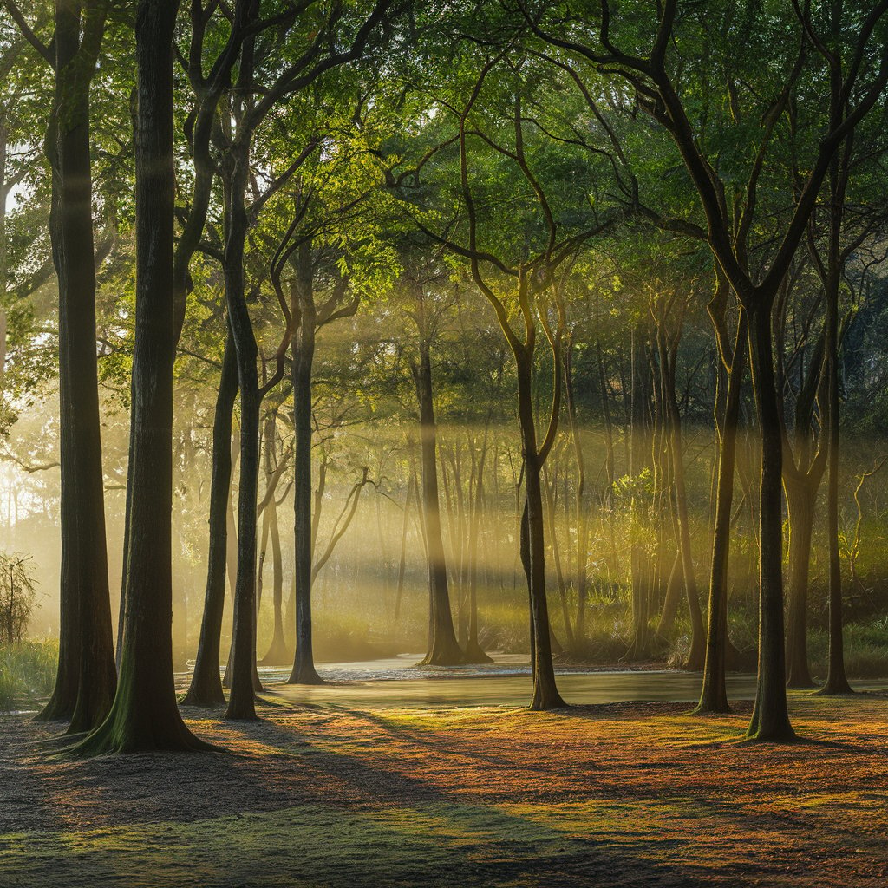
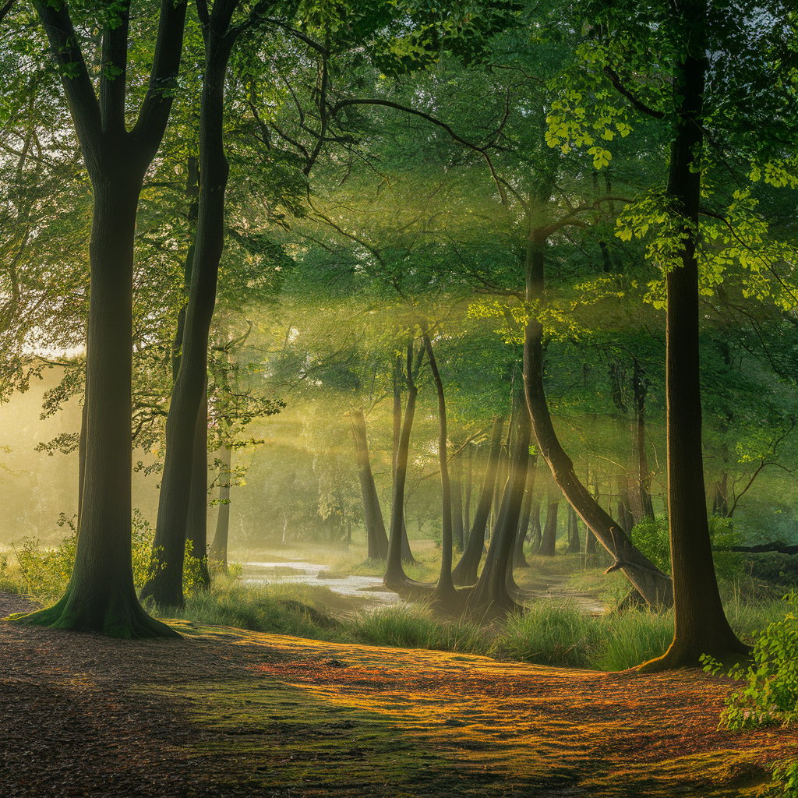
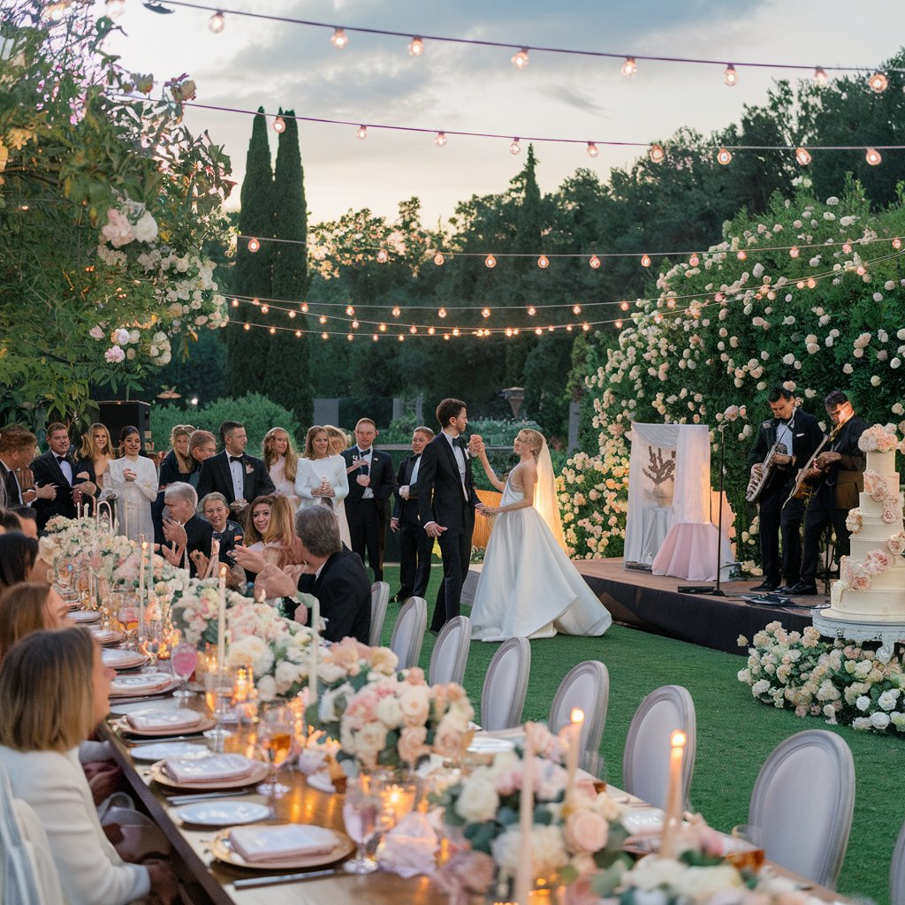
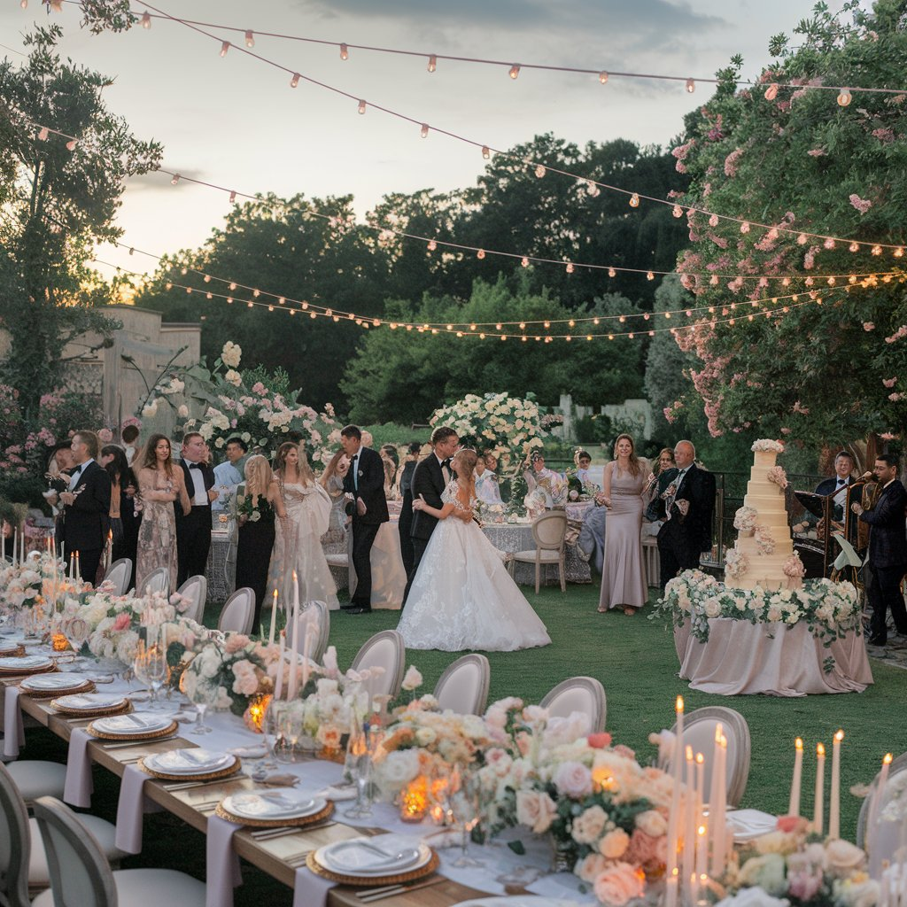
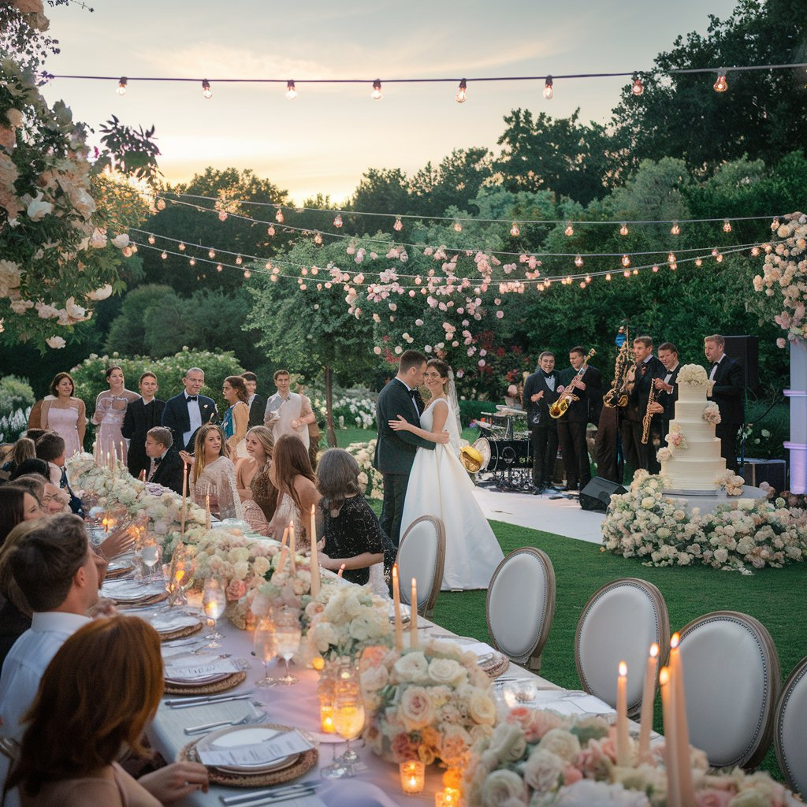
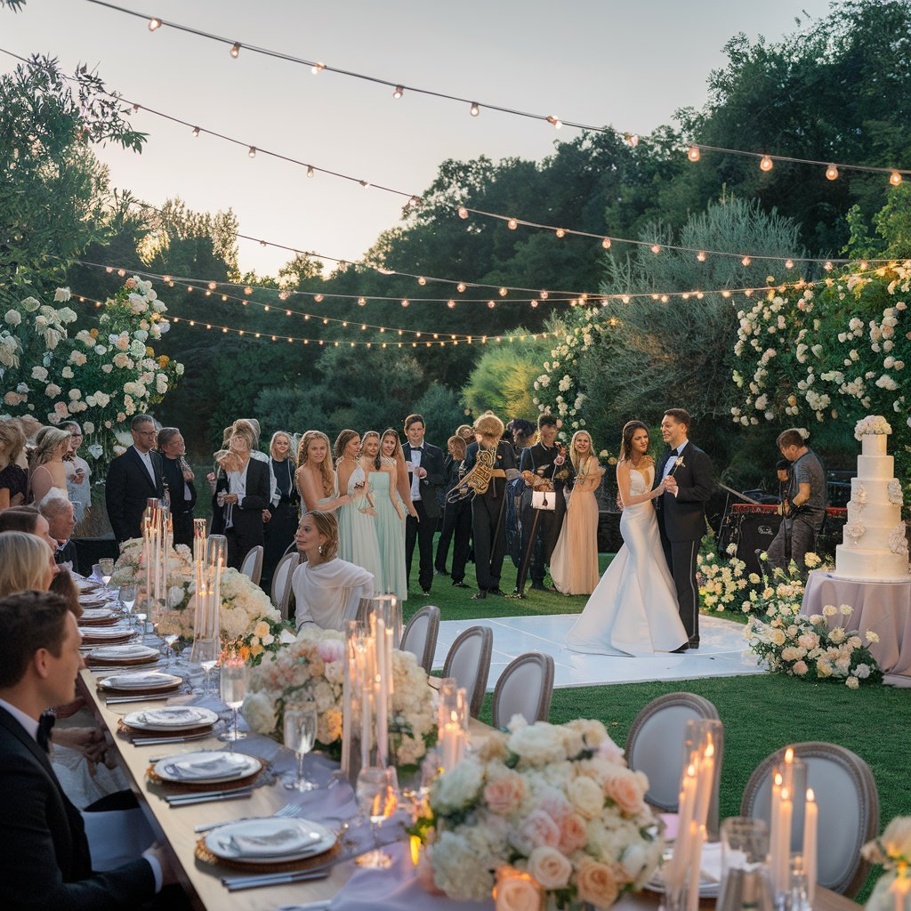

Galeria de fotos
Fotos na Praia

Fotos de paisagens


Fotos de Casamentos




Sou Kleber, fotógrafo brasileiro, com um olhar atento aos detalhes que muitas vezes passam despercebidos. Minha paixão pela fotografia começou na adolescência, quando recebi minha primeira câmera. Desde então, mergulhei nesse universo, sempre buscando aprimorar minhas habilidades e explorar novas formas de expressão. Ao longo da minha carreira, tive a oportunidade de trabalhar em diversos projetos, como retratos, moda, eventos e paisagens. O que mais me fascina na fotografia é a possibilidade de contar histórias e transmitir emoções através de cada clique. Gosto de trabalhar com a luz e a composição de forma cuidadosa, destacando os detalhes que tornam cada imagem única. Além disso, valorizo muito a conexão que consigo estabelecer com as pessoas que fotografo, o que resulta em retratos autênticos e cheios de emoção. Meu trabalho já foi exibido em galerias e também colaboro com revistas e campanhas publicitárias. Para mim, a fotografia é uma arte que continua me inspirando a cada novo desafio.